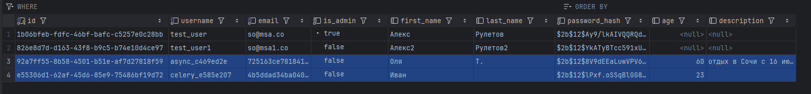
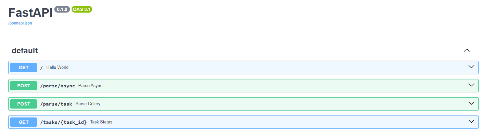

Лабораторная работа 3. Упаковка FastAPI приложения в Docker, Работа с источниками данных и Очереди.
Ход работы
Docker
Сервис из лабораторной работы 1 собирается с помощью следующего Dockerfile:
FROM python:3.10-slim
WORKDIR /find_companion
COPY requirements.txt .
RUN pip install --no-cache-dir -r requirements.txt
COPY ./alembic.ini .
COPY ./alembic ./alembic
COPY ./app ./app
Парсер (апи и воркер) собирается с помощью похожего Dockerfile:
FROM python:3.10-slim
WORKDIR /parser
COPY requirements.txt .
RUN pip install --no-cache-dir -r requirements.txt
COPY . .
Все сервисы запускаются с помощью docker compose файла. Все команды запуска также описаны в docker-compose.yml:
services:
postgres:
image: postgres:15
container_name: postgres
restart: always
healthcheck:
test: [ "CMD-SHELL", "pg_isready -U ${DB_USER} -d ${DB_NAME}" ]
interval: 5s
timeout: 5s
retries: 5
environment:
POSTGRES_USER: ${DB_USER}
POSTGRES_PASSWORD: ${DB_PASSWORD}
POSTGRES_DB: ${DB_NAME}
POSTGRES_HOST_AUTH_METHOD: md5
ports:
- "${DB_PORT:-5432}:5432"
volumes:
- ./postgres_data:/var/lib/postgresql/data
companion_app:
build:
context: ./find_companion
dockerfile: Dockerfile
container_name: companion_app
ports:
- "8080:8000"
depends_on:
postgres:
condition: service_healthy
env_file: .env
environment:
DB_HOST: postgres
DB_PORT: 5432
command: bash -c "alembic upgrade head && python app/main.py"
redis:
image: redis:7
container_name: redis
restart: always
ports:
- "6379:6379"
parser_worker:
build:
context: ./parser
dockerfile: Dockerfile
container_name: parser_worker
env_file: .env
environment:
DB_HOST: postgres
DB_PORT: 5432
command: celery -A tasks worker --loglevel=info --max-tasks-per-child=10
depends_on:
postgres:
condition: service_healthy
redis:
condition: service_started
parser_api:
build:
context: ./parser
dockerfile: Dockerfile
container_name: parser_api
env_file: .env
environment:
DB_HOST: postgres
DB_PORT: 5432
command: python main.py
ports:
- "8001:8000"
depends_on:
postgres:
condition: service_healthy
redis:
condition: service_started
Celery task инициируется следующим образом:
import asyncio
from celery import Celery
from config import settings
from parser import save_page
celery_app = Celery(
"worker",
broker=settings.redis_url,
backend=settings.redis_url,
)
@celery_app.task
def parse_url_task(url: str) -> dict:
return asyncio.run(save_page(url, prefix="celery"))
В файле main.py описано два эндпоинта: для парсинга асинхронно и с помощью celery.
@app.post("/parse/async")
async def parse_async(body: ParseRequest):
await save_page(body.url, prefix="async")
return {"status": "ok"}
@app.post("/parse/task")
async def parse_celery(body: ParseRequest):
task = parse_url_task.delay(body.url)
return {"task_id": task.id}
Результатом работы обоих эндпоинтов будет два добавленных пользователя:

Список эндпоинтов в swagger:
